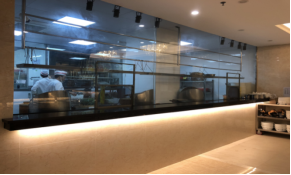

Evaluation Only. Created with Aspose.Words. Copyright 2003-2017 Aspose Pty Ltd.
在食品安全方面，我们尽职责让百姓放心—我市严把食用农产品市场准入关
文字：近年来，我市严把食用农产品市场准入关，通过执法人员直接或委托第三方检验机构的形式，对全市食用农产品批发、零售市场经营的蔬菜和水产品开展每周快筛快检工作。对发现的疑似不合格产品，督促相关经营者即时下架，监督销毁处理。同时不定期到农贸市场开展免费为群众检测食用农产品活动，检测的项目包括：农药残留中的有机磷及氨基甲酸酯类、拟除虫菊酯等，水产品中的孔雀石绿、氯霉素、磺胺、喹诺酮、工业用甲醛等，畜肉中使用的莱克多巴胺、沙丁胺醇、盐酸克伦特罗磺胺等药物，食用油中的黄曲霉素B1、过氧化值、酸价等，腐竹和面粉中使用吊白块，肉制品中的亚硝酸盐等多个项目。
2.图片：
快速检测车到各农贸市场为市民提供农产品免费检测
农贸市场每天公示食用农产品检测结果
文字：推进 “明厨亮灶”与“江门市食品安全中央监控系统”建设
“进 “明厨亮灶”与“江门市食品安全中央监控系统”建设黄曲霉素B1、过氧化值、酸价等，腐竹和面粉中使用吊白块，肉制品中的亚硝酸盐等的莱克多巴胺、沙丁胺醇、盐酸克伦特罗磺胺等药物，食用油中的黄曲霉素否则一旦发生纠纷，自己。我市今年继续推进餐饮服务单位实施“明厨亮灶”工作。通过“明厨亮灶”建设促使我市餐饮服务行业食品安全管理水平上了新台阶，逐步构建了企业自律、政府监管、公众参与的餐饮服务食品安全社会共治格局
图片：餐饮监控式明厨亮灶
查看接入中央监控系统的学校食堂

文字：我市全面推进 “放心肉菜示范超市” 创建活动
自今年6月开始，在蓬江区、江海区、新会区三区进行先行试点开展“放心肉菜示范超市”创建活动。创建活动主要突出落实商超食品安全主体责任,督促其建立健全肉类、蔬菜、蛋类、水产品、水果等食用农产品质量安全管理制度,从管理机构、管理制度、设施设备、源头管控、进货查验、销售过程等方面把关,保证肉、菜质量安全。大力推进商超与场厂、场地挂钩,严格落实市场准入、快检托管、产品质量信息公示等制度,建立完善肉菜追溯体系,引导全市大中型商超建立来源信息可溯、质量安全可靠、群众放心消费的现代“肉、菜”流通与消费格局。
图片：抽检“放心肉菜超市”农产品